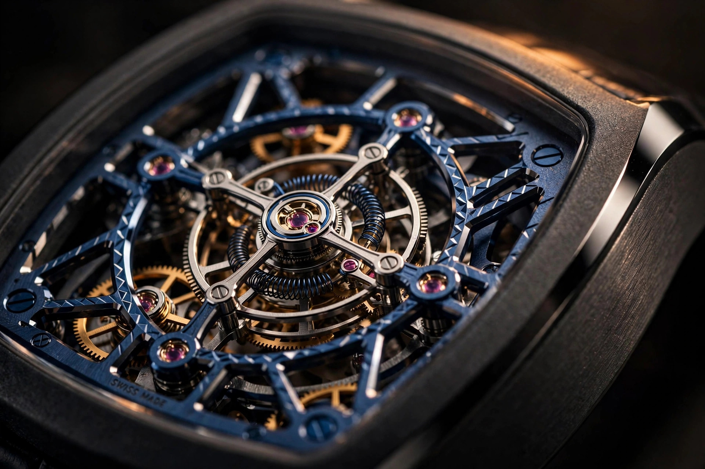

Gravity Is the Enemy: Moser's Double Hairspring Tourbillon Fights Physics with Two Springs
Inside the Streamliner Tourbillon Skeleton Ceramic Alpine: a matched pair of hairsprings that cancel each other's displacement, an anthracite ceramic case, and a question nobody at the launch seemed to ask

Every flat hairspring lies. When it breathes, expanding and contracting with each oscillation of the balance, its center of gravity slides off the axis. Microns only, but enough to drag the balance staff against the jewel wall, enough to add friction exactly where friction corrupts rate. For two centuries, watchmakers have compensated for this quiet betrayal. Breguet bent the spring's outer end upward in his overcoil so the breathing stayed concentric. The industry standard alternative is to ignore it, since most wrists never notice. H. Moser & Cie. takes a third path in the Streamliner Tourbillon Skeleton Ceramic Alpine: fit two hairsprings, mirrored, so each one's displacement cancels the other's. Simple symmetry solving a problem most watches quietly accept.
Released as the third chapter of Moser's partnership with Alpine Motorsports and the BWT Alpine F1 Team, reference 6814-2100 pairs that double hairspring with a flying tourbillon, a fully skeletonized in-house caliber HMC 814, and a 40 mm anthracite grey ceramic case. It is limited to 100 pieces at CHF 79,000. Prices belong to the marketplace, not to this column, but the engineering here deserves scrutiny on its own terms. Two separate answers to gravity sit inside one cage, and that pairing is where the story gets interesting, because one of them arguably makes the other unnecessary.
The Watch Itself
Start with what you can see. Anthracite ceramic flows through the Streamliner's cushion-shaped silhouette with alternating polished and satin surfaces, no lugs, and the integrated blue Alcantara strap running on a black DLC-treated titanium pin buckle. Inside, the HMC 814 is stripped to its architecture: mainplate and bridges finished in Alpine blue with diamond bevelling, a skeletonized gold oscillating weight, and a one-minute flying tourbillon floating at 6 o'clock under a blue skeletonized bridge. Hour markers and three-dimensional hands use Globolight inserts, a ceramic-based material loaded with Super-LumiNova that reads as white ceramic by day and glows at night, so legibility survives the skeletonization instead of being sacrificed to it. Water resistance is rated to 120 meters, which for a skeletonized tourbillon is genuinely demanding. Hodinkee rightly flags the Alcantara as a questionable choice near that much water. Sweaty steering wheels come to mind.
Compared against its siblings, this is the first skeleton flying tourbillon in the Streamliner line to wear a ceramic case, though a red-dial ceramic version with a full ceramic bracelet preceded it earlier this year. Movement specs are familiar Moser territory: 32 mm caliber diameter, 5.5 mm thick, 167 components, 28 jewels, 21,600 vibrations per hour, a 72-hour power reserve, and a bidirectional pawl winding system. What is new, or at least newly emphasized, is the double hairspring inside the tourbillon, made in-house by Moser's sister company Precision Engineering AG. That pair is the technical heart of this watch, and understanding what it fixes requires looking at what a single spring gets wrong.
What a Single Spring Gets Wrong
Picture the hairspring from above. At rest, its coils sit in concentric rings around the balance axis. As the balance swings, the spring expands on one side and contracts on the other, but not symmetrically: the outer terminal is pinned to a fixed stud while the inner terminal rotates with the staff, so the coil's geometry deforms unevenly through each half-oscillation. Physicists call the result a shifting center of mass. Watchmakers feel it as the balance's pivot being nudged sideways inside its jewel hole with every beat, creating friction that varies with amplitude and position.
Breguet's answer, circa 1795, was to raise the spring's outer coil above the plane in a terminal curve, which made the breathing roughly concentric. Terminal curves work. They also consume vertical space, complicate manufacturing, and remain an approximation. Silicon lithographic springs sidestep some of the asymmetry through geometry freedom, though their thermal compensation carries its own questions. Moser's answer rejects the single-spring compromise entirely. Mount two flat spirals in mirror opposition, one above the balance and one below, and every displacement vector from the upper spring finds its negation in the lower. The center of gravity stays on the axis not by approximation but by cancellation. Isochronism improves because the spring's effective stiffness no longer depends on which way gravity happens to be pulling the balance at a given amplitude.
Making that pair is the hard part, and the reason double hairsprings appear so rarely. Two springs must be matched in stiffness, mass distribution, and terminal geometry to fractions that approach the absurd; any mismatch reintroduces exactly the asymmetry the design exists to erase. Breguet himself used doubled springs in his earliest tourbillons before abandoning them as uneconomical. Modern revivals are scarce: F.P. Journe pairs oscillators for resonance, Laurent Ferrier uses double hairsprings on select tourbillons, and Moser has built its recent tourbillon identity around the configuration since 2018, producing the springs at Precision Engineering AG alongside its own balance staffs. Hodinkee's coverage calls the arrangement "original," which is fair for the specific execution even if the principle predates the quartz crisis by 150 years.
The Redundant Question
Now the uncomfortable part. A tourbillon exists to average out positional error by rotating the entire escapement, exposing every jewel to every orientation so rate deviations cancel over one revolution. A double hairspring exists to eliminate positional error at the source by keeping the oscillator's center of gravity on the axis regardless of orientation. Put both in one watch and you have belt and suspenders strapped to the same waist. Either mechanism plausibly achieves most of the accuracy gain on its own; the marginal contribution of the second is a question no press release answers, because the honest answer is probably "small."
None of which makes the combination stupid. Redundancy in a tourbillon is the point of a tourbillon, arguably the whole genre, since the mechanism's modern function is demonstration rather than necessity. A wrist-worn tourbillon in 2026 corrects errors that silicon regulation and free-sprung balances already minimized. What Moser is demonstrating is manufacturing capability: the ability to produce matched hairspring pairs in-house, at small scale, inside a skeletonized flying construction, inside a ceramic case, with 12 ATM of water resistance behind it. Seen that way, the double hairspring tourbillon is not solving a timing problem. It is solving a credibility problem, proving that an independent manufacture of under 5,000 watches a year can execute what most of Geneva outsources or abandons. That is worth CHF 79,000 worth of attention, whether or not the second spring moves the rate sheet.
One caveat belongs here, because tourbillon marketing rarely volunteers it. Moser does not publish timing results for this piece, and the watch is not chronometer certified. Nothing in the physics suggests the double hairspring fails to do its job, but the job's magnitude on a wrist, where positions change constantly and the tourbillon averages what remains, is genuinely debatable. An honest manufacture would publish before-and-after rate traces for single versus double spring in the same caliber. Moser has the in-house capability to run that experiment. I would read that paper.
Ceramic Is Not Just a Color
Anthracite reads as an aesthetic choice. The manufacturing behind it is anything but decorative. Watch cases in ceramic begin as zirconia powder bound in a polymer, injection-molded or pressed into a green body roughly 20 to 25 percent oversize, then sintered near 1,400 degrees Celsius as the binder burns out and the part shrinks to final dimensions. Every tolerance must be predicted before firing, because after sintering the ceramic reaches 1,200 to 1,500 Vickers, several times harder than steel, and only diamond tooling touches it. Moser alternates polished and satin finishes across the Streamliner silhouette, which means masking, diamond-paste polishing, and abrasive blasting on a material that forgives nothing. A scratch in the green body survives firing as a scar. A scratch in steel polishes out.
Ceramic's hardness is the marketing line, scratch-proof and featherweight, but its real engineering character is brittleness. A ceramic case cannot deform to absorb shock the way metal does; it either survives or it fractures, which is why the case architecture matters more than the material datasheet. The Streamliner cushions that reality with its lugless integrated design, distributing strap loads across the case middle rather than concentrating them at lugs, and with a screw-in crown, a sapphire caseback, and gasketing engineered around ceramic's stiffness. Twelve atmospheres of water resistance in a skeletonized tourbillon case is the quiet specification here. Sealing a large sapphire back against a rigid ceramic mid-case, with thermal expansion coefficients that differ from every metal gasket in the assembly, is genuinely difficult. That 120 meters matters more than the color.
Globolight and the Legibility Problem
Skeleton dials have a legibility problem that most brands solve by ignoring it. Open the dial and the hands dissolve against the movement behind them; the wearer squints, the photograph looks spectacular, the wrist tells time poorly. Moser's answer is Globolight, a ceramic matrix loaded with Super-LumiNova, formed into solid indices and hand inserts rather than painted on. By day the inserts read as clean white ceramic against the Alpine blue bridges, giving the eye high-contrast anchors. By night they glow. The material is worth noting because it treats lume as structure rather than coating, which is the same philosophy as the ceramic case: form the material, don't decorate with it. Monochrome's hands-on coverage suggests the contrast genuinely fixes the legibility complaints that dogged earlier skeleton Streamliners.
Winding What the Eye Can See
A skeletonized gold rotor deserves a mechanical footnote. Skeletonizing an oscillating weight removes mass, and automatic winding lives or dies on rotor inertia: less mass means weaker winding torque, especially at the low amplitudes of desk-bound wear. Gold, at nearly 19 grams per cubic centimeter, buys back that inertia in the smallest possible package, which is why the HMC 814's fully openworked weight is specified in gold rather than tungsten or brass. Moser pairs it with a bidirectional pawl system that captures energy on both directions of rotor swing instead of one, clawing back winding efficiency that the skeletonization gives away. Seventy-two hours of reserve at 3 Hz from a 5.5 mm thick skeleton caliber suggests the math works. Whether it works on a wrist that types all day is the kind of question only long-term ownership answers.
Where It Lands
Moser's Alpine partnership could have produced a paint job. The first two chapters, a pit-crew smartwatch and a driver limited edition, leaned that way. This third piece is the first one that reads as engineering responding to motorsport rather than marketing borrowing from it: lightweight materials, structural lume, a drivetrain of matched springs doing what suspension engineers would recognize as cancelling an unwanted mode. Alpine blue on the bridges is livery. The double hairspring is the race program.
Is it worth CHF 79,000? That is a marketplace question, and this column does not answer those. Is it well reasoned? Mostly. The ceramic case is honestly manufactured, the skeletonization is honestly structured, and the double hairspring solves a real physics problem even if its pairing with a tourbillon doubles up on the solution. My complaint is narrow but real: publish the rate data. A manufacture that can make matched hairspring pairs in-house can certainly measure what they achieve. Until those traces exist, the double hairspring is a beautiful argument without its closing evidence. Gravity, as ever, gets the last word, and I would like to see the numbers before conceding it lost.
| Reference | 6814-2100 |
|---|---|
| Case | 40 mm anthracite grey ceramic, 12.8 mm thick, polished and satin finishes, sapphire caseback, screw-in crown |
| Water resistance | 120 m (12 ATM) |
| Caliber | HMC 814, in-house automatic skeleton |
| Dimensions | 32 mm diameter, 5.5 mm thick, 167 components, 28 jewels |
| Frequency | 21,600 vph (3 Hz) |
| Power reserve | 72 hours minimum |
| Tourbillon | One-minute flying, blue skeletonized bridge, original double hairspring by Precision Engineering AG |
| Finishing | Blue mainplate and bridges, diamond bevelling, skeletonized gold oscillating weight |
| Winding | Bidirectional pawl system |
| Indices and hands | Globolight ceramic with Super-LumiNova |
| Strap | Integrated blue Alcantara, black DLC-treated titanium pin buckle |
| Limitation | 100 pieces |
| Price | CHF 79,000 (excl. taxes); US pricing reported at $99,600 |